If you look at the UMAP examples, it’s clear that the default settings aren’t always appropriate for some datasets: it’s easy to get results where the clusters are very spaced out relative to their sizes, which makes viewing your data on a single static plot quite difficult compared to t-SNE. Fortunately, UMAP’s output weight function can be adjusted to give different results.
Note that another way to change UMAP’s output is to modify the value
of n_neighbors. This is a more drastic change that directly
modifies the input affinity graph we are trying to find a
low-dimensional approximation to, and it can have a big effect on
run-time, so we won’t consider that here. Changes to the output weight
function are more subtle.
Theory
The output weight between two points and are given by:
with
being the Euclidean distance in the embedding between the two points.
Below I drop the
subscript for clarity’s sake.
and
are two hyper-parameters. Usually they are determined by a non-linear
least squares fit based on an exponential decay curve parameterized by
min_dist and spread:
where min_dist is
and spread is
.
I have used those symbols to make it more obvious that this equation has
the same form as UMAP’s weighting function for its edge weights in the
input space. As a reminder, the presence of the max
operation and shifting the distances by
is to enforce the local connectivity constraint: there is always an edge
weight of 1 between a point and its nearest neighbor.
spread determines the x-value range over which the y-value
decays to zero, and is set to spread multiplied by 3.
Here’s some R code that works through this and then plots the results
using the Python UMAP defaults of spread = 1,
min_dist = 0.1:
spread <- 1
min_dist <- 0.1
# define the exponential
xv <- seq(
from = 0,
to = spread * 3,
length.out = 300
)
yv <- exp(-(pmax(0, xv - min_dist)) / spread)
# Fit the a,b curve to the exponential
params <- stats::nls(yv ~ 1 / (1 + a * xv^(2.0 * b)),
start = list(a = 1, b = 1)
)$m$getPars()
a <- params["a"]
b <- params["b"]
# Plot the results
title <-
paste0(
"exp curve spread = ",
spread,
", min_dist = ",
min_dist
)
sub <-
paste0("UMAP fit (green) a = ", formatC(a), " b = ", formatC(b))
plot(
xv,
yv,
xlab = "d",
ylab = "w",
type = "l",
main = title,
lwd = 2
)
graphics::mtext(sub)
lines(xv, 1 / (1 + a * xv^(2.0 * b)), col = "#1B9E77FF", lwd = 2)
As the title indicates, this curve leads to the default parameters of
,
.
uwot uses a slightly different default
min_dist = 0.001, which leads to
.
I don’t know why I used a different default min_dist –
probably I made a mistake. This is likely to change in a later version
of uwot, but it doesn’t make much of a difference to the
results, fortunately. Setting
gives the Cauchy distribution used in t-SNE (and the tumap
function in uwot), which corresponds roughly to
spread = 1.12 and min_dist = 0.23: putting
those values back into the curve-fitting routine will give you back
,
.
Close enough. Here is the uwot default results in orange
and the Cauchy results in blue overlaid with the UMAP defaults (green,
same as in the previous plot):

This still leaves open the question of how changing
spread and min_dist, or a and
b affects the output of UMAP. The current version of the UMAP
docs doesn’t mention spread and treats
min_dist as the only adjustable parameter, which can be
varied between 0 and very close to 1. But in
what follows we’ll take a look at both min_dist and
spread, and use the trusty MNIST digits dataset to
investigate their effect.
min_dist and spread
Let’s look at min_dist and spread first.
First, I’ll show some results of changing spread, keeping
min_dist = 0.1 and then we’ll look at changing
min_dist, while fixing spread = 1. The above
explanation of the exponential curve suggests that allowing
min_dist to exceed the value of spread will
give increasingly odd results.
spread
In the plots below, the value of spread and
min_dist is given in the title, along with the values of
a and b that they give rise to. The value of
spread increases from 0.1 to 10 as we go from left to right
and top to bottom.
| 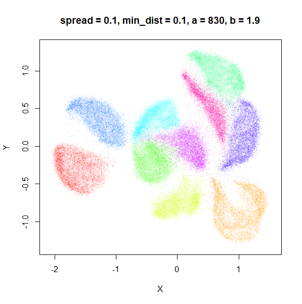 |  |
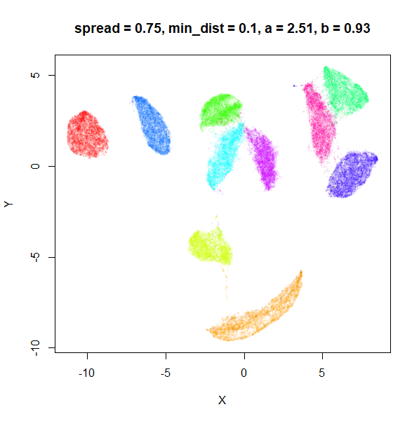 |
 |
 |
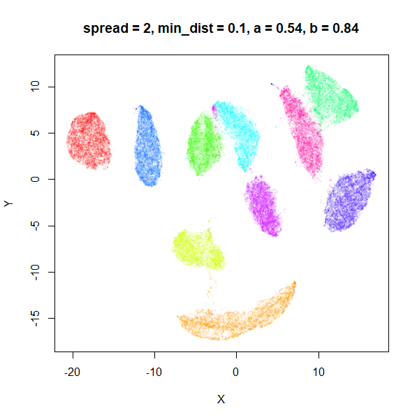 |
 |
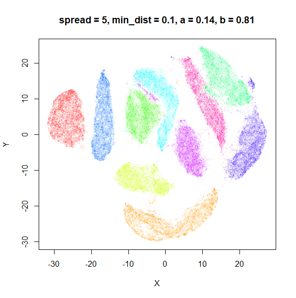 | 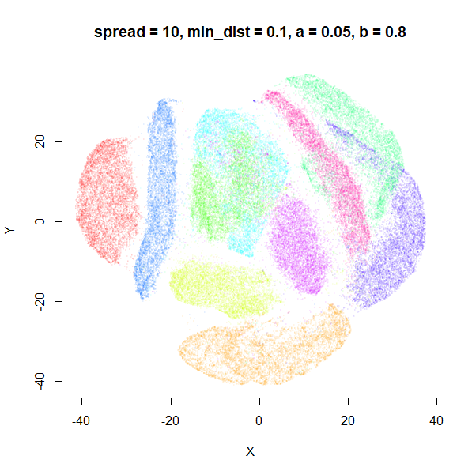 |
The top-left result, with spread = min_dist = 0.1 gives
a clear indication that you want spread to be larger than
min_dist. Then, for values of spread between
0.5-3 not much happens. As spread gets to 5 and above, the
clusters start to overlap each other.
Here’s a table summarizing how a and b
change as spread is varied.
| spread | min_dist | a | b |
|---|---|---|---|
| 0.1 | 0.1 | 830 | 1.93 |
| 0.5 | 0.1 | 5.07 | 1.00 |
| 0.75 | 0.1 | 2.51 | 0.93 |
| 1 | 0.1 | 1.58 | 0.90 |
| 1.5 | 0.1 | 0.84 | 0.86 |
| 2 | 0.1 | 0.54 | 0.84 |
| 3 | 0.1 | 0.30 | 0.82 |
| 5 | 0.1 | 0.14 | 0.81 |
| 10 | 0.1 | 0.05 | 0.80 |
For low values of spread, a starts getting
very large.
What about min_dist? Below, min_dist
increases from 0.0001 to 2, with spread = 1, so I suspect
the highest of these values will also show some eccentric results.
min_dist
 |
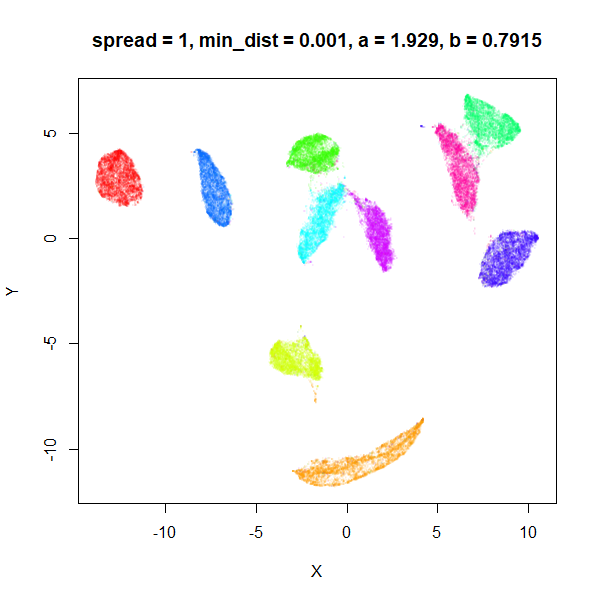 |  |
 |
|
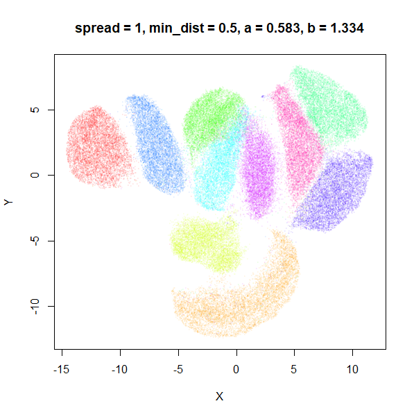 |
 |
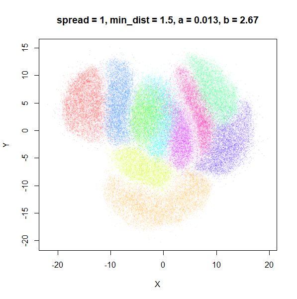 |  |
Again, there is a range of min_dist values, from 0.0001
to 0.1 where not much happens to the plot. Above this value, the
clusters begin to expand. The final shapes are very diffuse. The table
below shows how a and b change as
min_dist increases.
| spread | min_dist | a | b |
|---|---|---|---|
| 1 | 0.0001 | 1.932 | 0.791 |
| 1 | 0.001 | 1.929 | 0.792 |
| 1 | 0.01 | 1.90 | 0.80 |
| 1 | 0.05 | 1.75 | 0.84 |
| 1 | 0.1 | 1.58 | 0.90 |
| 1 | 0.5 | 0.58 | 1.33 |
| 1 | 1 | 0.12 | 1.93 |
| 1 | 1.5 | 0.013 | 2.67 |
| 1 | 2 | 0.0004 | 3.89 |
For value of min_dist larger than 0.5, values of
a drop quickly while b increases rapidly.
In terms of the differences between spread and
min_dist, min_dist seems to more obviously
increase the size of the clusters, whereas increasing
spread keeps the shape and boundary of the clusters a bit
better. spread can therefore be used to control the
inter-cluster distances to some extent, where as min_dist
controls the size of the clusters.
a and b
Rather than change spread and min_dist, we
can supply values of a and b directly. Perhaps
these can also be interpreted. Again, we’ll look at changing each value
separately, leaving the other value at the UMAP defaults
(a = 1.58 and b = 0.90). I used the range of
values of a and b that resulted from changing
min_dist and spread in the previous section’s
results to set the range of values I look at below.
Wang and
co-workers recommend that b > 0.5 to be a good loss
function for dimensionality reduction (see Proposition 1 and 2 in their
PaCMAP paper).
a
a seemed to have a wider range of values than
b, so I looked at values between a = 0.0001
and a = 100.
 |
 |
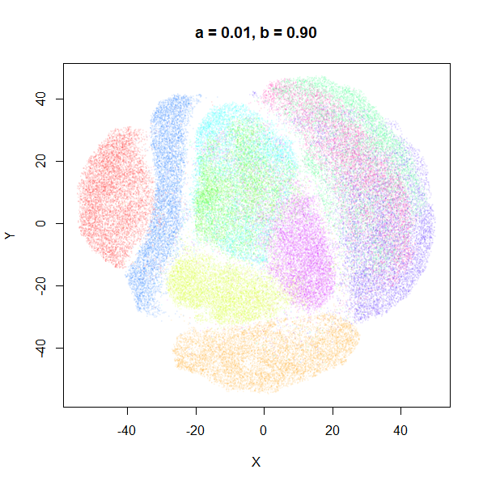 |
| 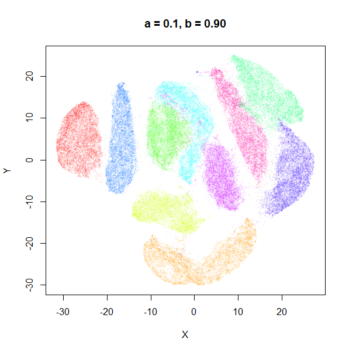 | 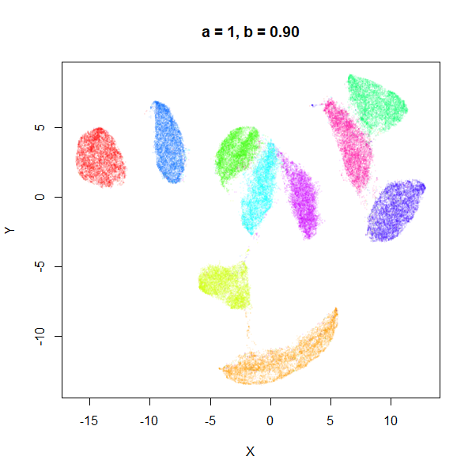 |  |
 |
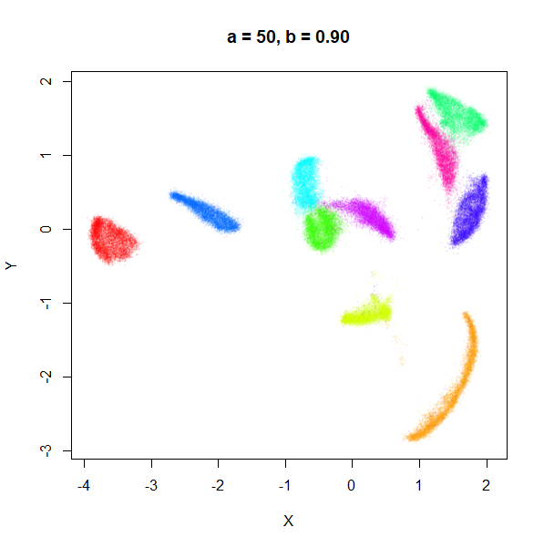 | 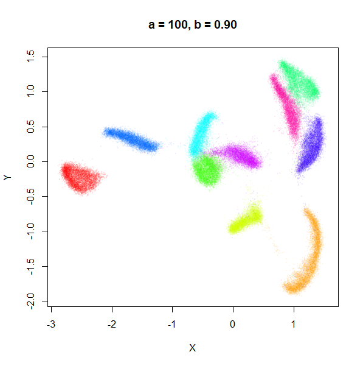 |
a seems to control the spread of the clusters for most
of its range. Low values of a certainly result in a diffuse
round cloud. Above a = 10, I suspect we are running into
numerical issues with taking a large power of a small positive value.
Values between 0.1 and 10 seem reasonable, with higher values leading to
smaller clusters.
b
b definitely seems to have a smaller range of useful
values compared to a, so I looked at values between
b = 0.1 to b = 2.5.
| 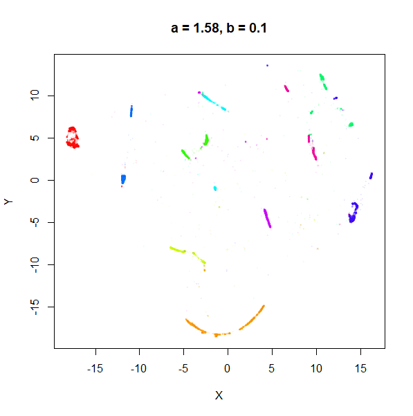 |  |
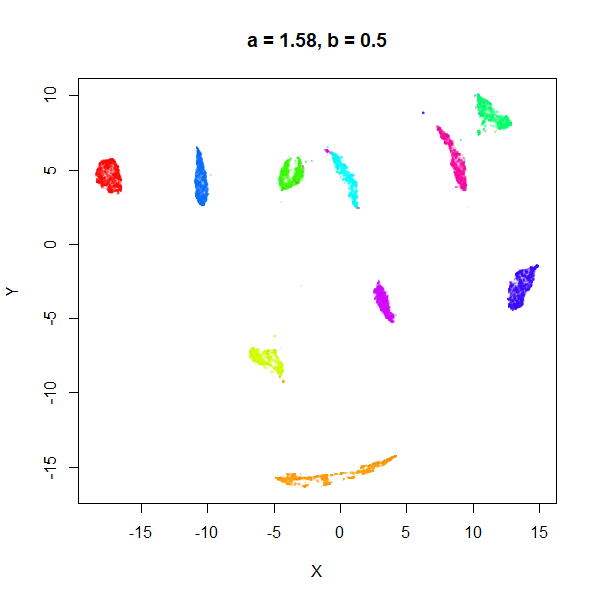 |
 |
 |
 |
 |
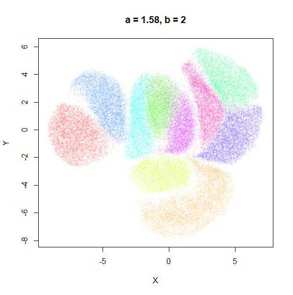 |  |
b seems to work like the heavy-tail parameter sometimes
used in t-SNE: low values
increase the distances between the clusters, relative to their size, but
also reveal sub-clusters that appear to be one structure in the other
plots. At high values, the space between clusters is reduced, but you
can still see borders between the clusters, unlike what happens with low
a.
I don’t see a big difference between using a and
b directly, or sticking with min_dist and
spread I prefer a and b myself,
as it reminds me more of the approach used in ABSNE
(PDF), although I don’t claim there is any equivalence between the
a and b parameters in UMAP and the
and
parameters in that work.
Examples
MNIST is useful for seeing the effect of changing a and
b, but it can be visualized well with the default
parameters. So here are two examples which show that we can improve on
the default visualizations, by using our knowledge of what
a and b roughly represent in terms of cluster
size and separation.
Example 1: tasic2018
The transcriptomics dataset tasic2018 is a good example where the
default UMAP parameters are sub-optimal. Below is the default UMAP
result in the top left image, and then a series of results based on me
fiddling with a and b in response to it. I
eventually fumble my way to a setting with a lower a and a
higher b that provides a better visualization (in my
opinion), which you can see in the lower right.
| 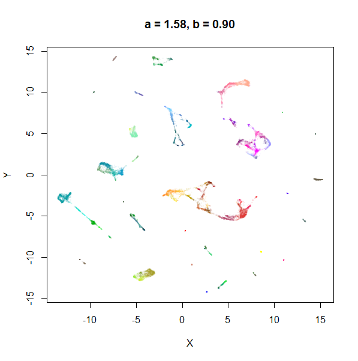 |  |
 |
 |

My recommendation
Hopefully this is enough to convince you that the embedding parameters can be profitably twiddled with in more than a random way to give visualizations that improve over the default settings.
Of min_dist and spread, modifying
min_dist between 0 and 1, as suggested by the UMAP docs
seems to be most fruitful of the parameters to meddle with.
I personally prefer to use a and b
directly. To find good values for a and b, you
can start with them at a = 1 and b = 1, which gives a
t-SNE-like output function, and you can use the tumap
function to generate the initial plot much faster. I also recommend
doing any PCA dimensionality reduction outside of uwot and
using ret_nn = TRUE for the first plot, so you can re-use
the nearest neighbors data in subsequent runs of umap. This
is a substantial speed up and makes repeating runs with different values
of a and b a lot more tolerable.
Here’s an example workflow:
# PCA to 50 dimensions first
mnist_pca <- irlba::prcomp_irlba(mnist, n = 50, retx = TRUE, center = center,
scale. = FALSE)$x
# t-UMAP is equivalent to a = 1, b = 1
# remember to get the nearest neighbor data back too
mnist_a1b1 <- tumap(mnist_pca, ret_nn = TRUE)
# find a
mnist_a1.5b1 <- umap(mnist_pca, nn_method = mnist_a1b1$nn, a = 1.5, b = 1)
mnist_a0.5b1 <- umap(mnist_pca, nn_method = mnist_a1b1$nn, a = 0.5, b = 1)
# find b based on whichever value of a you prefer
mnist_a0.5b1.2 <- umap(mnist_pca, nn_method = mnist_a1b1$nn, a = 0.5, b = 1.2)